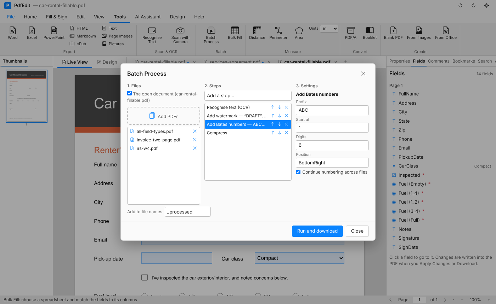

Tutorials > Working faster
Process a folder of PDFs in one go
Run the same steps, such as OCR, compress, watermark or password, over many PDFs at once, and save the steps to use again.

Open Batch Process#
Click Batch Process (Home tab, Automate group).
Choose the files#
- Windows: pick a folder, or individual files.
- Mac and web: click Add PDFs and choose the files. Tick The open document to include the one you're working on.
Add the steps#
Add the steps in the order you want them to run. Each step has its own settings:
| Step | What it does |
|---|---|
| OCR | Makes scanned pages searchable |
| Compress | Makes the files smaller |
| Watermark | Adds text such as DRAFT or CONFIDENTIAL |
| Flatten | Fixes form fields and comments into the page |
| Rotate | Turns the pages |
| Page numbers / Header and footer / Bates numbers | Numbers and labels every page |
| Remove hidden info | Strips metadata, scripts and attachments |
| Password | Encrypts every file |
| PDF/A | Makes archive copies |
| Export text | Saves the text of each file |
NotePasswords are never saved with the steps. You type them each time.
Save the steps as an action#
If you'll do this again, save the list of steps as an action with a name, like "Scan cleanup" or "Send to client". Next time, pick the action and run it.
Run it#
Start the batch. PdfEdit works through each file and shows its progress. On Windows the results go to the folder you chose; on Mac and the web you get them together in a ZIP.
The originals are never changed.
What's next#
- Fill a form for every row of a spreadsheet
- Search PDFs (View tab) finds text in every PDF in a folder